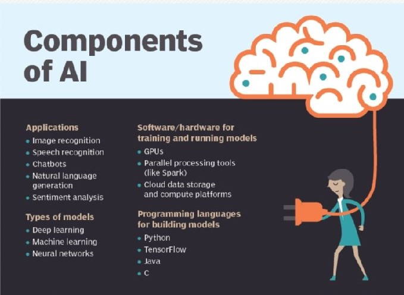

As the hype around AI has accelerated, vendors have been scrambling to promote how their products and services use AI. Often what they refer to as AI is simply one component of AI, such as machine learning. AI requires a foundation of specialized hardware and software for writing and training machine learning algorithms. No one programming language is synonymous with AI, but a few, including Python, R and Java, are popular.
